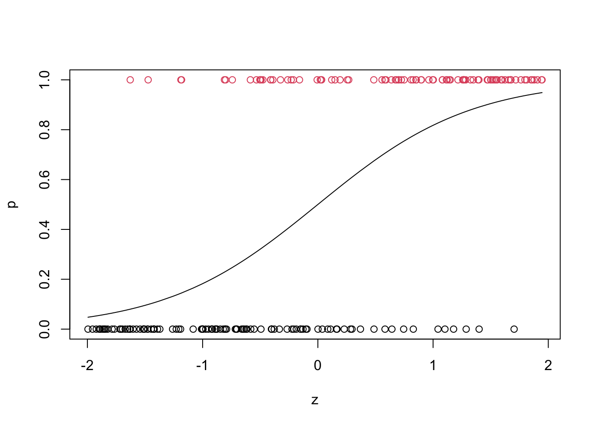
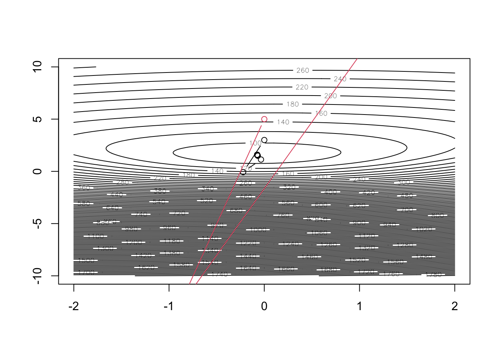

# function to compute logistic regression -log likelihood, -score and
# information. b=parameters, r=binary response, z=covariate
lik_score_info <- function(b,r,z) {
u <- b[1]+b[2]*z
u2 <- exp(u)
l <- -sum(u*r-log(1+u2))
p <- u2/(1+u2)
s <- -c(sum(r-p),sum(z*(r-p)))
v <- matrix(c(sum(p*(1-p)),sum(z*p*(1-p)),0,sum(z*z*p*(1-p))),2,2)
v[1,2] <- v[2,1]
list(neg.loglik=l,neg.score=s,inf=v)
}
neg_logp_logistic <- function (b, z, r)
{
u <- b[1]+b[2]*z
u2 <- exp(u)
-sum(u*r-log(1+u2))
}
####### a function for finding MLE with newton method
mle_logistic_nr <- function(b0, no_iter, r, z, debug=FALSE)
{
result_nr <- matrix(0,no_iter+1, 3)
colnames(result_nr) <- c('beta0','beta1','neg_loglike')
result_nr[1,] <- c(b0, 0)
for( i in 1:no_iter + 1)
{
q <- lik_score_info(result_nr[i-1,1:2],r,z)
result_nr[i,1:2] <- result_nr[i-1,1:2] - solve(q$inf,q$neg.score)
result_nr[i-1,3] <- q$neg.loglik
if(debug) print(result_nr[i-1,])
}
result_nr[-(no_iter+1),]
}
## generate a data set
gen_logistic_data <- function(b,n)
{
z <- sort(runif(n, -2,2))
emu <- exp(b[1]+z*b[2])
p <- emu/(1+emu)
r <- (runif(n)<p)*1
plot (z, p, type = "l",ylim=c(0,1))
points (z, r, col = r+1)
list(z=z,r=r)
}
data <- gen_logistic_data(c(0,1.5),200)
# using self-programmed newton method
mle_logistic_nr(c(0,3),15,data$r,data$z) beta0 beta1 neg_loglike
[1,] 0.00000000 3.00000000 104.55605
[2,] -0.22189124 -0.07328039 144.39880
[3,] -0.03456498 1.13222968 92.21232
[4,] -0.06824366 1.49542229 89.55394
[5,] -0.07421718 1.57731640 89.46663
[6,] -0.07438897 1.58093334 89.46648
[7,] -0.07438913 1.58094006 89.46648
[8,] -0.07438913 1.58094006 89.46648
[9,] -0.07438913 1.58094006 89.46648
[10,] -0.07438913 1.58094006 89.46648
[11,] -0.07438913 1.58094006 89.46648
[12,] -0.07438913 1.58094006 89.46648
[13,] -0.07438913 1.58094006 89.46648
[14,] -0.07438913 1.58094006 89.46648
[15,] -0.07438913 1.58094006 89.46648mle_logistic_nr(c(0,5),15,data$r,data$z) beta0 beta1 neg_loglike
[1,] 0.0000000 5.00000 146.1109
[2,] -0.9073182 -13.21895 2328.3055
[3,] 184.5687092 2351.27213 Inf
[4,] NaN NaN NaN
[5,] NaN NaN NaN
[6,] NaN NaN NaN
[7,] NaN NaN NaN
[8,] NaN NaN NaN
[9,] NaN NaN NaN
[10,] NaN NaN NaN
[11,] NaN NaN NaN
[12,] NaN NaN NaN
[13,] NaN NaN NaN
[14,] NaN NaN NaN
[15,] NaN NaN NaN## look at contour of bivariate log likelihood
B0 <- seq (-2, 2, by = 0.1)
B1 <- seq (-10, 10, by = 0.1)
loglike_values <- matrix (0, length (B0), length (B1))
for (i in 1:length (B0)) {
for (j in 1:length (B1))
{
loglike_values[i,j] <-
neg_logp_logistic (c(B0[i], B1[j]),z = data$z, r = data$r )
}
}
contour (B0, B1, loglike_values, nlevels = 100)
points(mle_logistic_nr(c(0,3),15,data$r,data$z), col = 1, type = "b")
points(mle_logistic_nr(c(0,5),15,data$r,data$z), col = 2, type = "b") 
###### Find MLE using nlm function
nlm (neg_logp_logistic, c(0,0), z = data$z, r = data$r, hessian = T) -> logit_nlm
nlm (neg_logp_logistic, c(0,5), z = data$z, r = data$r, hessian = T)$minimum
[1] 89.46648
$estimate
[1] -0.07439041 1.58093760
$gradient
[1] -2.165734e-05 -3.796003e-05
$hessian
[,1] [,2]
[1,] 28.6162091 -0.3332366
[2,] -0.3332366 23.0286623
$code
[1] 1
$iterations
[1] 8nlm (neg_logp_logistic, c(-10, -10), z = data$z, r = data$r, hessian = T)Warning in nlm(neg_logp_logistic, c(-10, -10), z = data$z, r = data$r, hessian
= T): Inf replaced by maximum positive value
Warning in nlm(neg_logp_logistic, c(-10, -10), z = data$z, r = data$r, hessian
= T): Inf replaced by maximum positive value
Warning in nlm(neg_logp_logistic, c(-10, -10), z = data$z, r = data$r, hessian
= T): Inf replaced by maximum positive value
Warning in nlm(neg_logp_logistic, c(-10, -10), z = data$z, r = data$r, hessian
= T): Inf replaced by maximum positive value
Warning in nlm(neg_logp_logistic, c(-10, -10), z = data$z, r = data$r, hessian
= T): Inf replaced by maximum positive value$minimum
[1] 89.46648
$estimate
[1] -0.07438939 1.58093946
$gradient
[1] 7.034373e-06 4.575333e-06
$hessian
[,1] [,2]
[1,] 28.6161807 -0.3332506
[2,] -0.3332506 23.0286179
$code
[1] 1
$iterations
[1] 16# find MLE standard errors using hessian of negative log likelihood
sds <- sqrt (diag (solve(logit_nlm$hessian))); sds[1] 0.1869523 0.2084024###### find MLE using glm function
logitfit_glm <- glm (r ~ z, family = binomial(), data = data)
summary (logitfit_glm)
Call:
glm(formula = r ~ z, family = binomial(), data = data)
Coefficients:
Estimate Std. Error z value Pr(>|z|)
(Intercept) -0.07439 0.18695 -0.398 0.691
z 1.58094 0.20839 7.587 3.28e-14 ***
---
Signif. codes: 0 '***' 0.001 '**' 0.01 '*' 0.05 '.' 0.1 ' ' 1
(Dispersion parameter for binomial family taken to be 1)
Null deviance: 276.76 on 199 degrees of freedom
Residual deviance: 178.93 on 198 degrees of freedom
AIC: 182.93
Number of Fisher Scoring iterations: 5logitfit_glm <- glm (r ~ z, family = binomial(), data = data, start = c(0,0))
summary (logitfit_glm)
Call:
glm(formula = r ~ z, family = binomial(), data = data, start = c(0,
0))
Coefficients:
Estimate Std. Error z value Pr(>|z|)
(Intercept) -0.07439 0.18695 -0.398 0.691
z 1.58094 0.20838 7.587 3.28e-14 ***
---
Signif. codes: 0 '***' 0.001 '**' 0.01 '*' 0.05 '.' 0.1 ' ' 1
(Dispersion parameter for binomial family taken to be 1)
Null deviance: 276.76 on 199 degrees of freedom
Residual deviance: 178.93 on 198 degrees of freedom
AIC: 182.93
Number of Fisher Scoring iterations: 5logitfit_glm <- glm (r ~ z, family = binomial(), data = data, start = c(0,2))
summary (logitfit_glm)
Call:
glm(formula = r ~ z, family = binomial(), data = data, start = c(0,
2))
Coefficients:
Estimate Std. Error z value Pr(>|z|)
(Intercept) -0.07439 0.18695 -0.398 0.691
z 1.58094 0.20838 7.587 3.28e-14 ***
---
Signif. codes: 0 '***' 0.001 '**' 0.01 '*' 0.05 '.' 0.1 ' ' 1
(Dispersion parameter for binomial family taken to be 1)
Null deviance: 276.76 on 199 degrees of freedom
Residual deviance: 178.93 on 198 degrees of freedom
AIC: 182.93
Number of Fisher Scoring iterations: 4logitfit_glm <- glm (r ~ z, family = binomial(), data = data, start = c(0,3))
summary (logitfit_glm)
Call:
glm(formula = r ~ z, family = binomial(), data = data, start = c(0,
3))
Coefficients:
Estimate Std. Error z value Pr(>|z|)
(Intercept) -0.07439 0.18695 -0.398 0.691
z 1.58094 0.20838 7.587 3.28e-14 ***
---
Signif. codes: 0 '***' 0.001 '**' 0.01 '*' 0.05 '.' 0.1 ' ' 1
(Dispersion parameter for binomial family taken to be 1)
Null deviance: 276.76 on 199 degrees of freedom
Residual deviance: 178.93 on 198 degrees of freedom
AIC: 182.93
Number of Fisher Scoring iterations: 6